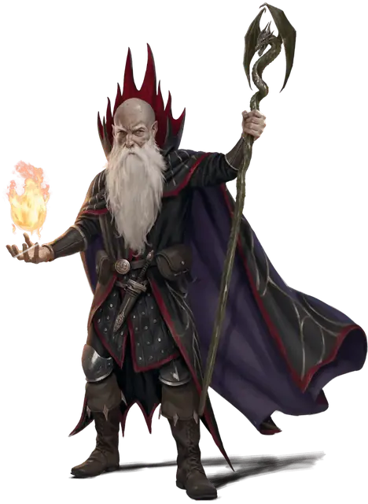

Келек
Kelek
Средний Гуманоид (Человек, Чародей), хаотично-злой, именной НИП

Класс Доспеха 12 (наручи защиты)
Хиты 45 (7к8 + 14)
Скорость 30 футов
| мод | спас | ||
|---|---|---|---|
| СИЛ | 15 | +2 | +2 |
| ЛОВ | 10 | +0 | +0 |
| ТЕЛ | 14 | +2 | +5 |
| мод | спас | ||
|---|---|---|---|
| ИНТ | 15 | +2 | +2 |
| МДР | 13 | +1 | +1 |
| ХАР | 17 | +3 | +6 |
Навыки Запугивание +6, Обман +6
Чувства пассивное Восприятие 11
Языки Общий, Драконий, Эльфийский
Опасность 5 (1800 опыта)
Бонус мастерства +3
Особенности
Особое снаряжение. Келек носит наручи защиты [bracers of defense] и владеет посохом ударов [staff of striking] с 10 зарядами. Посох восстанавливает 1к6 + 4 израсходованных заряда ежедневно на рассвете. Если он истратил последний заряд, бросьте к20. Если выпадет «1», посох становится немагическим боевым посохом.
Действия
Мультиатака. Келек совершает три атаки Магическим снарядом, Посохом ударов или их комбинацию. Он может заменить одну из атак накладыванием заклинания.
Магический снаряд. . Рукопашная или дальнобойная атака заклинанием: +6 к попаданию, досягаемость 5 футов или дистанция 60 футов, одна цель. Попадание: 13 (2к12) урона силовым полем.
Посох ударов. Рукопашная атака оружием: +8 к попаданию, досягаемость 5 футов, одна цель. Попадание: 8 (1к6 + 5) дробящего урона или 9 (1d8 + 5) дробящего урона при использовании двумя руками, и Келек может израсходовать до 3-х зарядов посоха, дополнительно нанося 3 (1к6) урона силовым полем за каждый израсходованный заряд.
Огненный взрыв (перезарядка 4-6). Келек создает взрыв магического огня, центрированный в точке, которую он может видеть в пределах 120 футов. Каждое существо в сфере радиусом 20 футов с центром в этой точке должно совершить спасбросок Ловкости Сл 14, получая 35 (10к6) урона огнём при провале или половину этого урона при успехе.
Использование заклинаний. Келек накладывает одно из следующих заклинаний, используя Харизму в качестве базовой характеристики (Сл спасброска от заклинаний 14):
• Неограниченно: свет [light], волшебная рука [mage hand], фокусы [prestidigitation];
• 1/день: подчинение зверя [dominate beast], полёт [fly], отражения [mirror image], паутина [web].
Реакции
Магическая защита (3/день). Когда по нему попадают, Келек защищает себя невидимым барьером магической силы. До конца своего следующего хода он получает бонус +5 к КД, в том числе против спровоцировавшей атаки.
Описание
Келек - жадный, самовлюбленный социопат, который упивается хаосом, но в душе трус. Тот факт, что он очень умен, делает его еще более опасным. Больше всего на свете он хочет, чтобы посох силы [staff of power] оказался во владении его самого ненавистного врага, Ринглеруна.